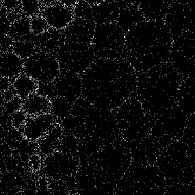
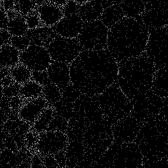
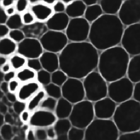

ICLR 2027 · Under review
Learning Clean Generative Processes from Noisy Measurements
Abstract
We study how to learn a generative model of clean images using only noisy observations. Diffusion processes and their generalizations to non-Gaussian noise require posterior predictions at every noise level. We first show that it is possible to learn these predictions from independent noisy views using Noise2Noise regression, but only at or above the noise level of the training data. To learn the predictions below that level, needed to generate clean images, we impose consistency: a prediction should equal its expectation after continuing the sampling process. We derive conditions under which consistency uniquely determines the continuation to the clean image distribution and verify them for Poisson, binomial, Gamma, and negative-binomial measurements. Experiments on CIFAR-10, photon-counting microscopy, and synthetic aperture radar show that the required posterior predictions can be learned from noisy views alone and that the consistency relation repairs the continuation beyond the noise level of the data, which severely deteriorates without consistency.

standarddiffusion

ours
measurementgenerated